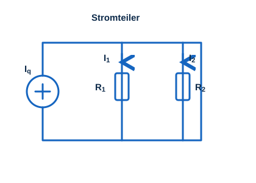

Was ist ein Stromteiler?
Ein Stromteiler ist eine Schaltung, mit der ein Gesamtstrom in parallelen Zweigen aufgeteilt wird. Die Stromaufteilung erfolgt umgekehrt proportional zum jeweiligen Zweigwiderstand: durch den kleineren Widerstand fließt der größere Strom. Für einen Stromteiler werden mindestens zwei parallele Widerstände benötigt.

Berechnung
Stromteiler mit zwei parallelen Widerständen
Bei zwei parallelen Widerständen R₁ und R₂ teilt sich der Gesamtstrom Iq wie folgt auf:
Erweiterte Formel (mehrere parallele Widerstände)
Bei mehreren parallelen Widerständen ergibt sich der Strom durch den n-ten Zweig aus dem Verhältnis seines Leitwerts zur Summe aller Leitwerte:
Rechner: Stromteiler (zwei Widerstände)
Schaltungsmodul
Verwendung der Übungsschaltung
Die Übungsschaltung wird mit 5 V versorgt (VCC, +PWR). Die weißen Messpunkte unterhalb von R₁ und R₂ müssen dazu elektrisch verbunden werden. Für die Strommessung wird ein Amperemeter benötigt.
Übungen
- Einfache Strommessung mit dem Amperemeter im Zweig von R₁.
- Den Wert von R₁ mithilfe des Ohmschen Gesetzes (5 V) berechnen.
- Beide Zweigströme messen und daraus die Widerstandswerte bestimmen.
Bauteilwerte
| Bauteil | Wert |
|---|---|
| R₁ | 470 Ω – 10,47 kΩ (einstellbar) |
| R₂ | 470 Ω – 10,47 kΩ (einstellbar) |
Praktische Anwendung
- Stromversorgung von ICs
- Pegelanpassung von Audiosignalen